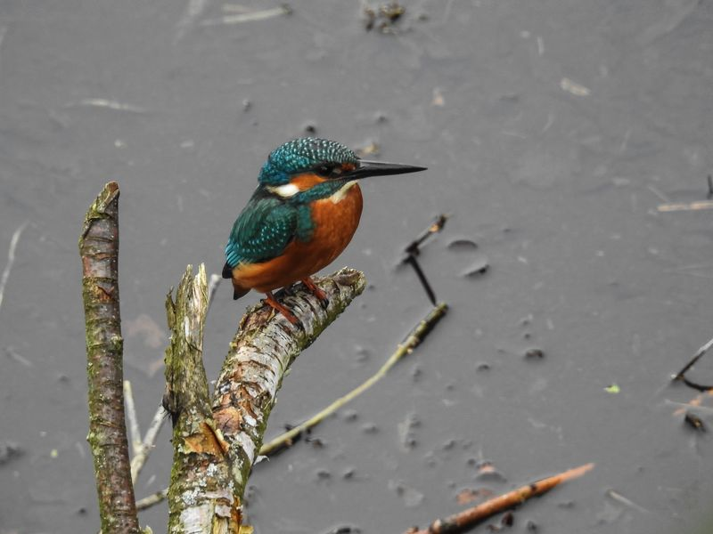

Eisvogel
Alcedo atthis
Der „fliegende Edelstein“ ist unregelmäßiger Brutvogel im Ried. Das große Angebot an Kleinfischen in den Naturschutz-Seen lockt aber auch Zuggäste an. Beobachtungen sind an den größeren Torfstichen, an der Ostrach und am Riedlehrpfad möglich. Der Vogel besticht nicht nur durch ein bunt schillerndes Gefieder, sondern auch durch seinen markanten Ruf.